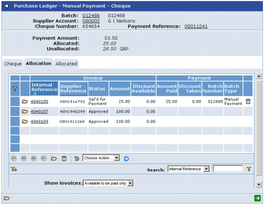

To allocate cash to outstanding invoices
- Select the manual

Before allocating payment to a transaction, you can check the invoice status and other details, by clicking the link in the Internal Reference column. This will display the Invoice Details screen. To return to the list of transactions, click
 .
. - To allocate payment to a transaction, click
 .
.
The Amount Paid and Discount Taken fields become input fields.
If required, you can override these amounts by entering the amount of the
. - Alternatively, to pay the full amount of a transaction (if the amount to allocate allows for this), select the transaction (or transactions) and choose Pay Invoices from the list.
As you allocate the value of the
NOTE
If you select an invoice containing a - To deselect payment, select the transaction and choose Delete Payments from the list.
- You can use the Allocated tab to see the amounts you have allocated so far in this transaction.
- When you have allocated the required amount of the .
NOTE
You can allocate (distribute) the amount of the
You will have to allocate this amount to a transaction at a later time (see Allocating